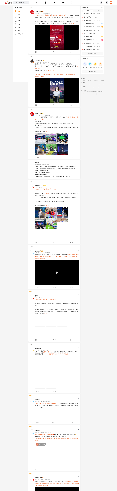

案例发生了什么

联想将 FIFA 全球合作伙伴身份放在“技术底座”而非单纯品牌露出上：用战术分析、数据与 AI 能力证明其可以服务球队、裁判和球迷三类对象。
它解决的策略问题
这页要回答的不是“联想：Football AI Pro 是否参与世界杯”，而是它如何通过“FIFA 全球合作伙伴 / 技术”回应“将赛事数据、战术分析与企业 AI 能力相连”这一业务问题。
资源如何变成行动
FIFA 全球合作伙伴 / 技术
把“将赛事数据、战术分析与企业 AI 能力相连”从赛事术语翻译成用户能理解的产品、体验或情绪理由。
赛场/转播建立权威感，内容、零售、活动或服务负责把一次看见变成多次接触。
优先观察商品、门店、电商、会员或长期社区项目是否接住了赛事关注。
动作拆解
- 以 Football AI Pro 连接球队战术分析与企业 AI 能力。
- 把后台技术能力转写为球迷可理解的互动与内容。
- 以长期技术合作减弱“只在世界杯出现一次”的短促感。
深度补充：从动作到复盘
以下字段用于把案例从“看过一个创意”推进到可执行、可衡量、可继续补证的研究对象。
将赛事数据、战术分析与企业 AI 能力相连
赛事观众、品牌既有用户，以及可被官方权益转化的新客
FIFA 全球合作伙伴 / 技术
官方赛事资产、品牌内容、产品/服务、零售或会员触点
权益可见度、用户参与、产品/服务使用与商业转化的分层变化
技术赞助的叙事起点不是参数，而是赛事里谁因此做得更好。
补齐“联想：Football AI Pro”的品牌/权利方原始发布、视频首帧与完整片、线下执行现场、投放日期、市场范围及可追溯效果口径。
传播与业务机制
官方身份提供可信起点，但传播效率取决于是否有可被球迷复述的具体动作。
让观众从“看见赞助商”走到观看、体验、收藏、互动或到店。
将权益落到产品、渠道或服务节点，避免赞助只停留在品牌曝光。
用长期主题、会员、数据或社区项目延长赛期之外的关系。
适用条件、风险与证据
- 需要明确权益能被调用的范围，而不是只记录赞助级别。
- 至少准备内容与商业两条承接线，防止资源只在比赛画面里出现。
- 复盘时区分赛事可见度、用户参与和实际业务结果，不能相互替代。
品牌与权威来源物料
这里只展示可追溯到品牌、权利方、官方账号或明确注明原始出处的真实物料；研究图卡不计入案例图片。



官方资料、结果口径与下一步
已验证事实
- FIFA 官方公告确认 Lenovo 是 Official FIFA Technology Partner，并以 FIFA Partner 的顶级层级覆盖 2026 世界杯与 2027 女足世界杯。
- 本页已把实际比赛中的完整 Lenovo 场边 LED、场馆环形大屏“Official Technology Partner”身份、联想官网比赛画面放到案例最前面，不再以微博截图承担主视觉。
- 联想官方资料同时留存移动设备观赛视觉与球员 3D 扫描执行图，说明该合作既有高可见品牌露出，也有赛事技术交付内容。
可追溯结果口径
- 当前图片能够验证合作身份、场边可见度和部分技术执行，但尚无统一的一手口径披露各场次 LED 露出时长、转播可见秒数、注意度或品牌归因提升。
原始来源
- FIFA · 2024-10-15Lenovo named Official FIFA Technology Partner
- Lenovo StoryHub · 2026-06-12Opening goal captured through Referee View and Lenovo AI technology
- Lenovo StoryHub · 2026-06-09FIFA World Cup 26 Lenovo AI press kit
- PetaPixel · 2026-06-19World Cup match photography with visible Lenovo pitch LED
- Fox Business · 2026-07-08Lenovo AI at the FIFA World Cup
来源链接优先指向品牌、权利方或持权媒体官方页面；品牌自述数据按原口径记录，不视作独立审计结果。